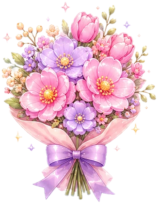
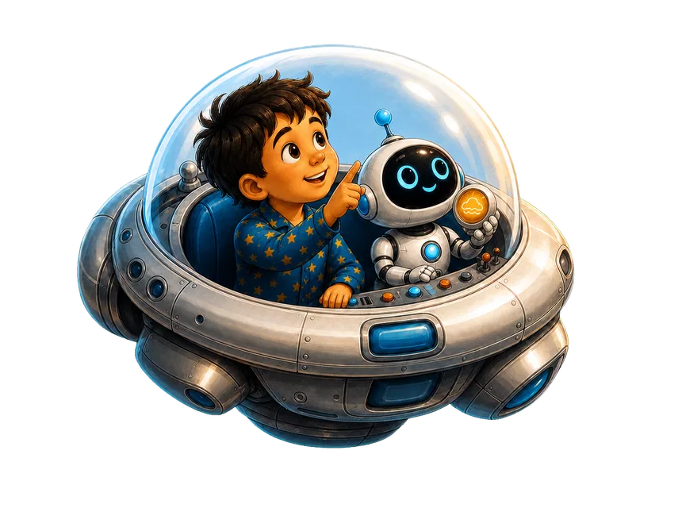

Magic Spelling
Letters and words
Classical Music
Listen and guess
Magic Spelling
Letters and words
Classical Music
Listen and guess

Petal Kingdom Pop the flowers and save the garden Little Color Garden Colour in the pictures
Ari & Dot A story about the planets Our Animal Book Tap an animal to hear its name